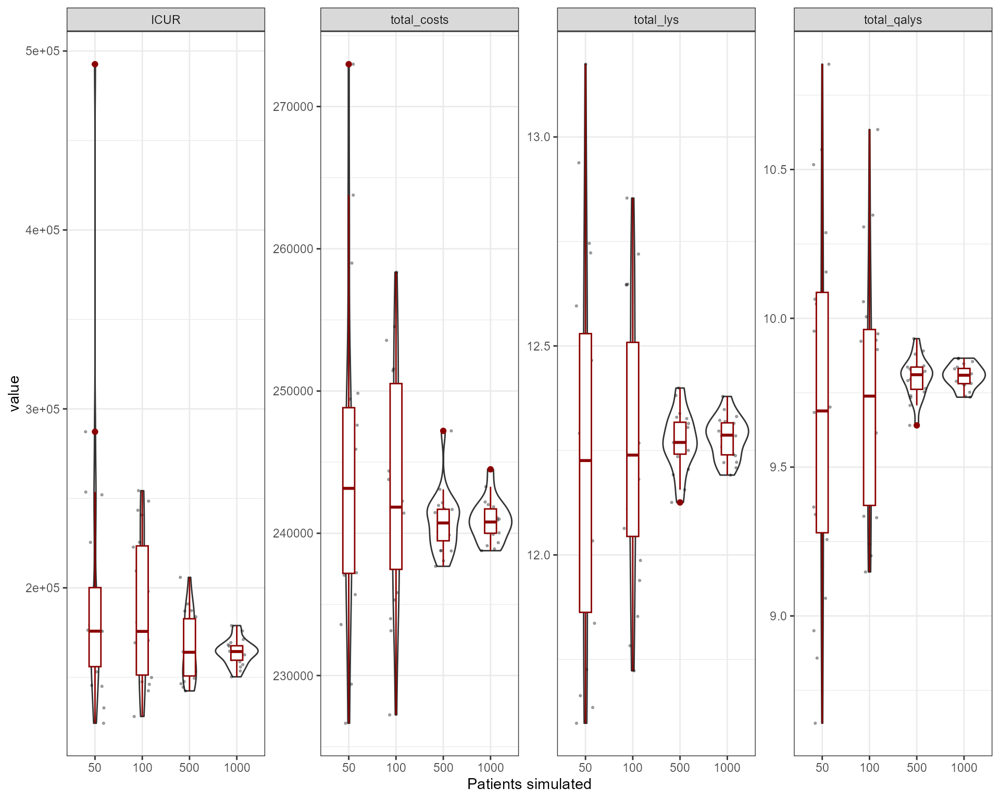
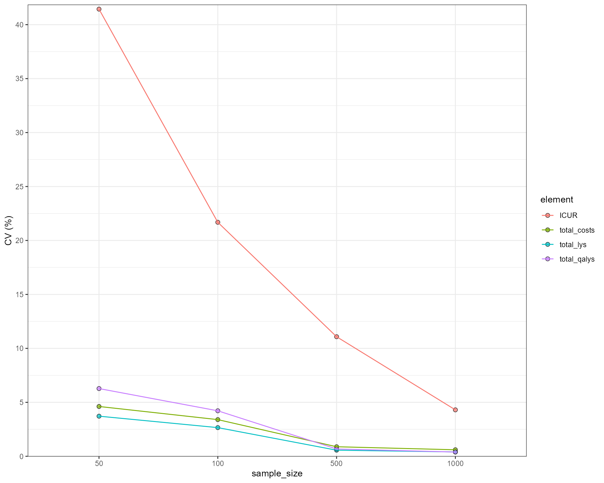
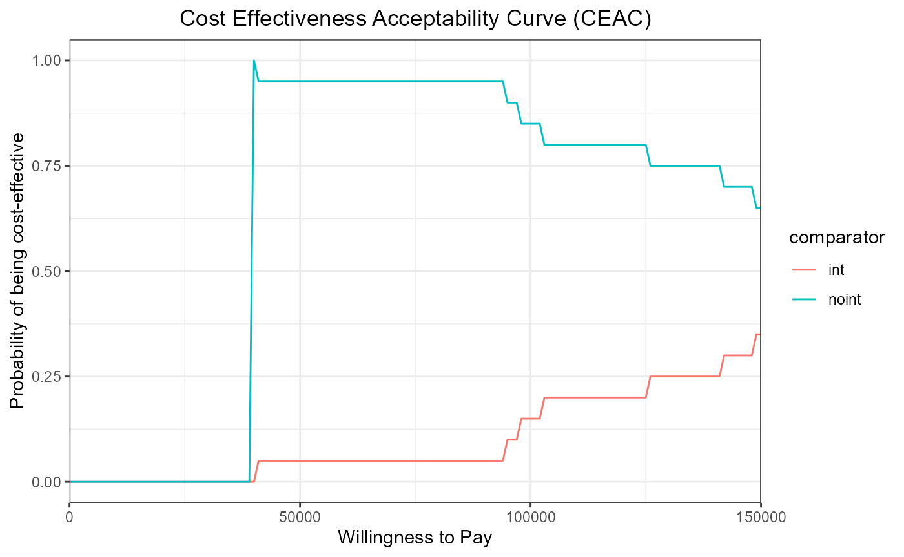
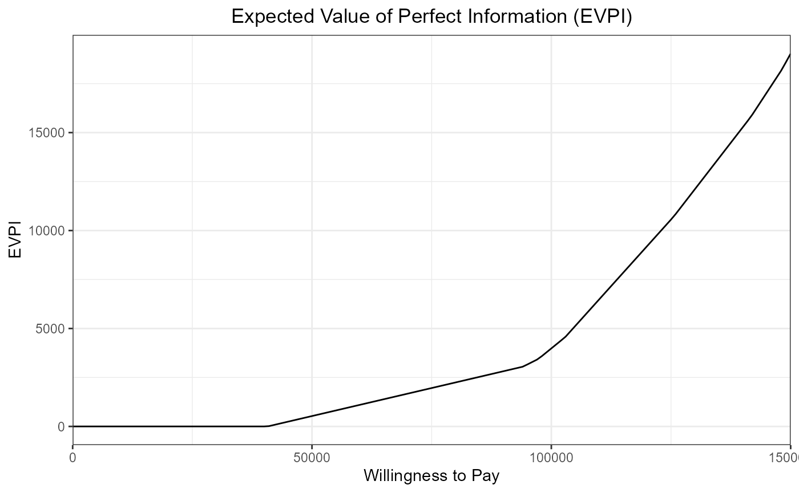

Structural and Parametric Uncertainty
Javier Sanchez Alvarez and Valerie Aponte Ribero
April 29, 2024
example_uncertainty.RmdIntroduction
This document runs a discrete event simulation model in the context of early breast cancer to show how uncertainty behaves in a simulation setting and how it complements with a standard PSA. As the model is extremely similar to the example in early breast cancer, the user can check the original model for details on functions, parameters etc.
Main options
library(RDICE)
library(dplyr)
#> Warning: package 'dplyr' was built under R version 4.3.2
#>
#> Attaching package: 'dplyr'
#> The following objects are masked from 'package:stats':
#>
#> filter, lag
#> The following objects are masked from 'package:base':
#>
#> intersect, setdiff, setequal, union
library(purrr)
library(tidyr)
#> Warning: package 'tidyr' was built under R version 4.3.2
library(flexsurv)
#> Warning: package 'flexsurv' was built under R version 4.3.2
#> Loading required package: survival
#> Warning: package 'survival' was built under R version 4.3.2
library(ggplot2)
#> Warning: package 'ggplot2' was built under R version 4.3.3
library(kableExtra)
#> Warning: package 'kableExtra' was built under R version 4.3.2
#>
#> Attaching package: 'kableExtra'
#> The following object is masked from 'package:dplyr':
#>
#> group_rowsGeneral inputs with delayed execution
Initial inputs and flags that will be used in the model can be defined below. This is exactly the same as in the original model, the only difference is that now we are adding an extra chunk which reflects the uncertainty of parameters to draw distributions. Furthermore, utilities and costs also have a distribution.
#Each patient is identified through "i"
#Items used in the model should be unnamed numeric/vectors! otherwise if they are processed by model it can lead to strangely named outcomes
#In this case, util_v is a named vector, but it's not processed by the model. We extract unnamed numerics from it.
#Put objects here that do not change on any patient or intervention loop
common_all_inputs <- add_item( #utilities
util_v = if(psa_bool){
setNames(MASS::mvrnorm(1,util.data$value,diag(util.data$se^2)),util.data$name) #in this case I choose a multivariate normal with no correlation
} else{setNames(util.data$value,util.data$name)},
util.idfs.ontx = util_v[["util.idfs.ontx"]],
util.idfs.offtx = util_v[["util.idfs.offtx"]],
util.remission = util_v[["util.remission"]],
util.recurrence = util_v[["util.recurrence"]],
util.mbc.progression.mbc = util_v[["util.mbc.progression.mbc"]],
util.mbc.pps = util_v[["util.mbc.pps"]]
) %>%
add_item( #costs
cost_v = if(psa_bool){
setNames(rgamma_mse(1,cost.data$value,cost.data$se),cost.data$name) #in this case I choose a gamma distribution
} else{setNames(cost.data$value,cost.data$name)},
cost.idfs.tx = cost_v[["cost.idfs.tx"]],
cost.recurrence = cost_v[["cost.recurrence"]],
cost.mbc.tx = cost_v[["cost.mbc.tx"]],
cost.tx.beva = cost_v[["cost.tx.beva"]],
cost.idfs.txnoint = cost_v[["cost.idfs.txnoint"]],
cost.idfs = cost_v[["cost.idfs"]],
cost.mbc.progression.mbc = cost_v[["cost.mbc.progression.mbc"]],
cost.mbc.pps = cost_v[["cost.mbc.pps"]],
cost.2ndline = cost_v[["cost.2ndline"]],
cost.ae = cost_v[["cost.ae"]]
) %>%
add_item( #parameter uncertainty
coef11_psa = ifelse(psa_bool,rnorm(1,2,0.1),2),
coef12_psa = ifelse(psa_bool,rnorm(1,3,0.1),3),
coef13_psa = ifelse(psa_bool,rnorm(1,0.8,0.05),0.8),
coef14_psa = ifelse(psa_bool,rnorm(1,0.5,0.05),0.5),
coef15_psa = ifelse(psa_bool,rnorm(1,2.3,0.1),2.3),
coef16_psa = ifelse(psa_bool,log(rnorm(1,0.08,0.005)),log(0.08)),
coef2_psa = ifelse(psa_bool,log(rnorm(1,0.2,0.01)),log(0.2)),
hr_psa = ifelse(psa_bool,exp(rnorm(1,log(1.2),0.05)),1.2)
)
#Put objects here that do not change as we loop through interventions for a patient
common_pt_inputs <- add_item(sex_pt = ifelse(rbinom(1,1,p=0.01),"male","female"),
nat.os.s = rresgompertz(1,
shape=if(sex_pt=="male"){0.102}else{0.115},
rate=if(sex_pt=="male"){0.000016}else{0.0000041},
lower_bound = 50) ) #in years, for a patient who is 50yo
#Put objects here that change as we loop through treatments for each patient (e.g. events can affect fl.tx, but events do not affect nat.os.s)
#common across arm but changes per pt could be implemented here (if (arm==)... )
unique_pt_inputs <- add_item(
fl.idfs.ontx = 1,
fl.idfs = 1,
fl.mbcs.ontx = 1,
fl.mbcs.progression.mbc = 1,
fl.tx.beva = 1,
fl.mbcs = 0,
fl.mbcs_2ndline = 0,
fl.recurrence = 0,
fl.remission = rbinom(1,1,0.8), #80% probability of going into remission
q_default = if (fl.idfs==1) {
util.idfs.ontx * fl.idfs.ontx + (1-fl.idfs.ontx) * (1-fl.idfs.ontx)
} else if (fl.idfs==0 & fl.mbcs==0) {
util.remission * fl.remission + fl.recurrence*util.recurrence
} else if (fl.mbcs==1) {
util.mbc.progression.mbc * fl.mbcs.progression.mbc + (1-fl.mbcs.progression.mbc)*util.mbc.pps
},
c_default = if(arm=="noint"){cost.idfs.txnoint* fl.idfs.ontx + cost.idfs}else{(cost.idfs.tx) * fl.idfs.ontx + cost.tx.beva * fl.tx.beva + cost.idfs},
c_ae = 0
)Events
Add Initial Events
Events are generated as before, the only difference being that the
parameters are not a simple number but the objects created as part of
common_all_inputs.
init_event_list <-
add_tte(arm="int",
evts = c("start","ttot", "ttot.beva","progression.mbc", "os","idfs","ttot.early","remission","recurrence","start.early.mbc"),
other_inp = c("os.early","os.mbc"),
input={ #intervention
start <- 0
#Early
idfs <- draw_tte(1,'lnorm',coef1=coef11_psa, coef2=coef2_psa)
ttot.early <- min(draw_tte(1,'lnorm',coef1=coef11_psa, coef2=coef2_psa),idfs)
ttot.beva <- draw_tte(1,'lnorm',coef1=coef11_psa, coef2=coef2_psa)
os.early <- draw_tte(1,'lnorm',coef1=coef12_psa, coef2=coef2_psa)
#if patient has remission, check when will recurrence happen
if (fl.remission) {
recurrence <- idfs + draw_tte(1,'lnorm',coef1=coef11_psa, coef2=coef2_psa)
remission <- idfs
#if recurrence happens before death
if (min(os.early,nat.os.s)>recurrence) {
#Late metastatic (after finishing idfs and recurrence)
os.mbc <- draw_tte(1,'lnorm',coef1=coef13_psa, coef2=coef2_psa) + idfs + recurrence
progression.mbc <- draw_tte(1,'lnorm',coef1=coef14_psa, coef2=coef2_psa) + idfs + recurrence
ttot <- draw_tte(1,'lnorm',coef1=coef14_psa, coef2=coef2_psa) + idfs + recurrence
}
} else{ #If early metastatic
start.early.mbc <- draw_tte(1,'lnorm',coef1=coef15_psa, coef2=coef2_psa)
idfs <- ifelse(start.early.mbc<idfs,start.early.mbc,idfs)
ttot.early <- min(ifelse(start.early.mbc<idfs,start.early.mbc,idfs),ttot.early)
os.mbc <- draw_tte(1,'lnorm',coef1=coef13_psa, coef2=coef2_psa) + start.early.mbc
progression.mbc <- draw_tte(1,'lnorm',coef1=coef14_psa, coef2=coef2_psa) + start.early.mbc
ttot <- draw_tte(1,'lnorm',coef1=coef14_psa, coef2=coef2_psa) + start.early.mbc
}
os <- min(os.mbc,os.early,nat.os.s)
}) %>% add_tte(arm="noint",
evts = c("start","ttot", "ttot.beva","progression.mbc", "os","idfs","ttot.early","remission","recurrence","start.early.mbc"),
other_inp = c("os.early","os.mbc"),
input={ #reference strategy
start <- 0
#Early
idfs <- draw_tte(1,'lnorm',coef1=coef11_psa, coef2=coef2_psa,beta_tx = hr_psa)
ttot.early <- min(draw_tte(1,'lnorm',coef1=coef11_psa, coef2=coef2_psa,beta_tx = hr_psa),idfs)
os.early <- draw_tte(1,'lnorm',coef1=coef12_psa, coef2=coef2_psa,beta_tx = hr_psa)
#if patient has remission, check when will recurrence happen
if (fl.remission) {
recurrence <- idfs +draw_tte(1,'lnorm',coef1=coef11_psa, coef2=coef2_psa)
remission <- idfs
#if recurrence happens before death
if (min(os.early,nat.os.s)>recurrence) {
#Late metastatic (after finishing idfs and recurrence)
os.mbc <- draw_tte(1,'lnorm',coef1=coef13_psa, coef2=coef2_psa) + idfs + recurrence
progression.mbc <- draw_tte(1,'lnorm',coef1=coef14_psa, coef2=coef2_psa) + idfs + recurrence
ttot <- draw_tte(1,'lnorm',coef1=coef14_psa, coef2=coef2_psa) + idfs + recurrence
}
} else{ #If early metastatic
start.early.mbc <- draw_tte(1,'lnorm',coef1=coef15_psa, coef2=coef2_psa)
idfs <- ifelse(start.early.mbc<idfs,start.early.mbc,idfs)
ttot.early <- min(ifelse(start.early.mbc<idfs,start.early.mbc,idfs),ttot.early)
os.mbc <- draw_tte(1,'lnorm',coef1=coef13_psa, coef2=coef2_psa) + start.early.mbc
progression.mbc <- draw_tte(1,'lnorm',coef1=coef14_psa, coef2=coef2_psa) + start.early.mbc
ttot <- draw_tte(1,'lnorm',coef1=coef14_psa, coef2=coef2_psa) + start.early.mbc
}
os <- min(os.mbc,os.early,nat.os.s)
})Add Reaction to Those Events
The reactions are set in the same fashion as in the original model. A
small modification has been made in generating the event
2ndline_mbc, which now also uses a random parameter if the
PSA option is active.
evt_react_list <-
add_reactevt(name_evt = "start",
input = {}) %>%
add_reactevt(name_evt = "ttot",
input = {
modify_item(list(q_default = if (fl.idfs==1) {
util.idfs.ontx * fl.idfs.ontx + (1-fl.idfs.ontx) * (1-fl.idfs.ontx)
} else if (fl.idfs==0 & fl.mbcs==0) {
util.remission * fl.remission + fl.recurrence*util.recurrence
} else if (fl.mbcs==1) {
util.mbc.progression.mbc * fl.mbcs.progression.mbc + (1-fl.mbcs.progression.mbc)*util.mbc.pps
},
c_default = if(arm=="noint"){cost.idfs.txnoint* fl.idfs.ontx + cost.idfs}else{(cost.idfs.tx) * fl.idfs.ontx + cost.tx.beva * fl.tx.beva + cost.idfs},
"fl.mbcs.ontx"= 0)) #Flag that patient is now off-treatment
}) %>%
add_reactevt(name_evt = "ttot.beva",
input = {
modify_item(list(q_default = if (fl.idfs==1) {
util.idfs.ontx * fl.idfs.ontx + (1-fl.idfs.ontx) * (1-fl.idfs.ontx)
} else if (fl.idfs==0 & fl.mbcs==0) {
util.remission * fl.remission + fl.recurrence*util.recurrence
} else if (fl.mbcs==1) {
util.mbc.progression.mbc * fl.mbcs.progression.mbc + (1-fl.mbcs.progression.mbc)*util.mbc.pps
},
c_default = cost.mbc.tx * fl.mbcs.ontx + cost.mbc.progression.mbc * fl.mbcs.progression.mbc + cost.mbc.pps * (1-fl.mbcs.progression.mbc) + cost.2ndline*fl.mbcs_2ndline,
"fl.tx.beva"= 0)) #Flag that patient is now off-treatment
}) %>%
add_reactevt(name_evt = "progression.mbc",
input = {
modify_item(list(q_default = if (fl.idfs==1) {
util.idfs.ontx * fl.idfs.ontx + (1-fl.idfs.ontx) * (1-fl.idfs.ontx)
} else if (fl.idfs==0 & fl.mbcs==0) {
util.remission * fl.remission + fl.recurrence*util.recurrence
} else if (fl.mbcs==1) {
util.mbc.progression.mbc * fl.mbcs.progression.mbc + (1-fl.mbcs.progression.mbc)*util.mbc.pps
},
c_default = cost.mbc.tx * fl.mbcs.ontx + cost.mbc.progression.mbc * fl.mbcs.progression.mbc + cost.mbc.pps * (1-fl.mbcs.progression.mbc) + cost.2ndline*fl.mbcs_2ndline,
"fl.mbcs.progression.mbc"=0,
"fl.mbcs_2ndline"=1)) #Flag that patient is progressed and going in 2nd line
new_event(list("2ndline_mbc" = curtime + draw_tte(1,'exp', coef16_psa)/12))
}) %>%
add_reactevt(name_evt = "idfs",
input = {
modify_item(list(q_default = if (fl.idfs==1) {
util.idfs.ontx * fl.idfs.ontx + (1-fl.idfs.ontx) * (1-fl.idfs.ontx)
} else if (fl.idfs==0 & fl.mbcs==0) {
util.remission * fl.remission + fl.recurrence*util.recurrence
} else if (fl.mbcs==1) {
util.mbc.progression.mbc * fl.mbcs.progression.mbc + (1-fl.mbcs.progression.mbc)*util.mbc.pps
},
c_default = if(arm=="noint"){cost.idfs.txnoint* fl.idfs.ontx + cost.idfs}else{(cost.idfs.tx) * fl.idfs.ontx + cost.tx.beva * fl.tx.beva + cost.idfs},
"fl.idfs"= 0))
}) %>%
add_reactevt(name_evt = "ttot.early",
input = {
modify_item(list(q_default = if (fl.idfs==1) {
util.idfs.ontx * fl.idfs.ontx + (1-fl.idfs.ontx) * (1-fl.idfs.ontx)
} else if (fl.idfs==0 & fl.mbcs==0) {
util.remission * fl.remission + fl.recurrence*util.recurrence
} else if (fl.mbcs==1) {
util.mbc.progression.mbc * fl.mbcs.progression.mbc + (1-fl.mbcs.progression.mbc)*util.mbc.pps
},
c_default = if(arm=="noint"){cost.idfs.txnoint* fl.idfs.ontx + cost.idfs}else{(cost.idfs.tx) * fl.idfs.ontx + cost.tx.beva * fl.tx.beva + cost.idfs},
"fl.idfs.ontx"=0,
"fl.tx.beva"=0)) #Flag that patient is now off-treatment
n_ae <- rpois(1,lambda=0.25*(curtime -prevtime)) #1 AE every 4 years
if (n_ae>0) {
new_event(rep(list("ae" = curtime + 0.0001),n_ae))
}
}) %>%
add_reactevt(name_evt = "remission",
input = {
modify_item(list(q_default = if (fl.idfs==1) {
util.idfs.ontx * fl.idfs.ontx + (1-fl.idfs.ontx) * (1-fl.idfs.ontx)
} else if (fl.idfs==0 & fl.mbcs==0) {
util.remission * fl.remission + fl.recurrence*util.recurrence
} else if (fl.mbcs==1) {
util.mbc.progression.mbc * fl.mbcs.progression.mbc + (1-fl.mbcs.progression.mbc)*util.mbc.pps
},
c_default = cost.recurrence * fl.recurrence,
"fl.remission"= 1))
}) %>%
add_reactevt(name_evt = "recurrence",
input = {
modify_item(list(q_default = if (fl.idfs==1) {
util.idfs.ontx * fl.idfs.ontx + (1-fl.idfs.ontx) * (1-fl.idfs.ontx)
} else if (fl.idfs==0 & fl.mbcs==0) {
util.remission * fl.remission + fl.recurrence*util.recurrence
} else if (fl.mbcs==1) {
util.mbc.progression.mbc * fl.mbcs.progression.mbc + (1-fl.mbcs.progression.mbc)*util.mbc.pps
},
c_default = cost.recurrence * fl.recurrence,
"fl.recurrence"=1,
"fl.remission"=0,
"fl.mbcs"=1,
"fl.mbcs.progression.mbc"=1)) #ad-hoc for plot
}) %>%
add_reactevt(name_evt = "start.early.mbc",
input = {
modify_item(list(q_default = if (fl.idfs==1) {
util.idfs.ontx * fl.idfs.ontx + (1-fl.idfs.ontx) * (1-fl.idfs.ontx)
} else if (fl.idfs==0 & fl.mbcs==0) {
util.remission * fl.remission + fl.recurrence*util.recurrence
} else if (fl.mbcs==1) {
util.mbc.progression.mbc * fl.mbcs.progression.mbc + (1-fl.mbcs.progression.mbc)*util.mbc.pps
},
c_default = cost.recurrence * fl.recurrence,
"fl.mbcs"=1,
"fl.mbcs.progression.mbc"=1))
}) %>%
add_reactevt(name_evt = "2ndline_mbc",
input = {
modify_item(list(q_default = if (fl.idfs==1) {
util.idfs.ontx * fl.idfs.ontx + (1-fl.idfs.ontx) * (1-fl.idfs.ontx)
} else if (fl.idfs==0 & fl.mbcs==0) {
util.remission * fl.remission + fl.recurrence*util.recurrence
} else if (fl.mbcs==1) {
util.mbc.progression.mbc * fl.mbcs.progression.mbc + (1-fl.mbcs.progression.mbc)*util.mbc.pps
},
c_default = cost.mbc.tx * fl.mbcs.ontx + cost.mbc.progression.mbc * fl.mbcs.progression.mbc + cost.mbc.pps * (1-fl.mbcs.progression.mbc) + cost.2ndline*fl.mbcs_2ndline,
"fl.mbcs_2ndline"= 0))
n_ae <- rpois(1,lambda=0.25*(curtime -prevtime)) #1 AE every 4 years
if (n_ae>0) {
new_event(rep(list("ae" = curtime + 0.0001),n_ae))
}
}) %>%
add_reactevt(name_evt = "ae",
input = {
modify_item(list(q_default = if (fl.idfs==1) {
util.idfs.ontx * fl.idfs.ontx + (1-fl.idfs.ontx) * (1-fl.idfs.ontx)
} else if (fl.idfs==0 & fl.mbcs==0) {
util.remission * fl.remission + fl.recurrence*util.recurrence
} else if (fl.mbcs==1) {
util.mbc.progression.mbc * fl.mbcs.progression.mbc + (1-fl.mbcs.progression.mbc)*util.mbc.pps
},
c_default = cost.mbc.tx * fl.mbcs.ontx + cost.mbc.progression.mbc * fl.mbcs.progression.mbc + cost.mbc.pps * (1-fl.mbcs.progression.mbc) + cost.2ndline*fl.mbcs_2ndline,
c_ae = cost.ae))
modify_event(list(
"os" = max(cur_evtlist[["os"]] - 0.125,curtime +0.0001) ))#each AE brings forward death by 1.5 months
}) %>%
add_reactevt(name_evt = "os",
input = {
modify_item(list(q_default = if (fl.idfs==1) {
util.idfs.ontx * fl.idfs.ontx + (1-fl.idfs.ontx) * (1-fl.idfs.ontx)
} else if (fl.idfs==0 & fl.mbcs==0) {
util.remission * fl.remission + fl.recurrence*util.recurrence
} else if (fl.mbcs==1) {
util.mbc.progression.mbc * fl.mbcs.progression.mbc + (1-fl.mbcs.progression.mbc)*util.mbc.pps
},
c_default = cost.mbc.tx * fl.mbcs.ontx + cost.mbc.progression.mbc * fl.mbcs.progression.mbc + cost.mbc.pps * (1-fl.mbcs.progression.mbc) + cost.2ndline*fl.mbcs_2ndline,
"fl.tx.beva"=0,
"fl.mbcs.ontx"=0,
"fl.idfs"=0,
"fl.mbcs"=0,
"curtime"=Inf))
}) Costs and Utilities
Costs and utilities are introduced below.
util_ongoing <- "q_default"
cost_ongoing <- "c_default"
cost_instant <- "c_ae"Model
The model can now be executed as normal. Given that this modeling exercise relies on sampling from distributions and simulating a finite number of patients, there is some randomness involved that can affect the results, even under the assumption that the parameters are fixed. However, running more patients also means the simulation is slower, so there is a trade-off between accuracy and speed. An important question here is to understand how much of the uncertainty we observe when running a PSA comes from the parametric uncertainty and how much comes from the fact that we are simulating a finite sample.
Structural Uncertainty
One way to test this is to run a few simulations for an increasing number of patients simulated. For example, below we run 50 deterministic simulations for 100, 1,000, 5,000 and 10,000 patients, to show how the model outcome can change depending on the random seed used. Note that this exercise can be very time consuming. It’s important to note that the optimal number of patients simulated will depend on the dispersion of the distributions, the patient pathway, the number of possible outcomes and the difference among these. For example, an event with low probability but high impact and variability implies a higher number of patients simulated in order to obtain stable outcomes.
To do this test, we set psa_bool = FALSE and (optional)
we set ipd = FALSE. This last option means that we are not
exporting IPD data from all these simulations, but rather the aggregate
outcomes (and the last simulation, which is included by default). This
is important when simulating a large number of patients with a lot of
simulations, which can generate very large objects (>1 GB). This
option can also be especially relevant when running a PSA, which would
require psa_bool = TRUE and a high number of
simulations.
sample_sizes <- c(50,100,500,1000)
sim_size_df <- NULL
for (sample_size in sample_sizes) {
results <- suppressWarnings( #run without warnings
run_sim_parallel(
npats=sample_size, # number of patients to be simulated
n_sim=6, # number of simulations to run
psa_bool = FALSE, # use PSA or not. If n_sim > 1 and psa_bool = FALSE, then difference in outcomes is due to sampling (number of pats simulated)
arm_list = c("int", "noint"), # intervention list
common_all_inputs = common_all_inputs, # inputs common that do not change within a simulation
common_pt_inputs = common_pt_inputs, # inputs that change within a simulation but are not affected by the intervention
unique_pt_inputs = unique_pt_inputs, # inputs that change within a simulation between interventions
init_event_list = init_event_list, # initial event list
evt_react_list = evt_react_list, # reaction of events
util_ongoing_list = util_ongoing,
cost_ongoing_list = cost_ongoing,
cost_instant_list = cost_instant,
ncores = 6, # number of cores to use, recommended not to use all
ipd=FALSE # Return IPD data through merged_df? Set to FALSE as it's not of interest here and it makes code slower
))
#We're extracting the overall ICER/ICUR and also costs/qalys/lys for the "noint" intervention
loop_df <- rbind(extract_psa_result(results[[1]],"total_costs"),
extract_psa_result(results[[1]],"total_lys"),
extract_psa_result(results[[1]],"total_qalys"))
loop_df <- rbind(loop_df %>%
pivot_longer(cols=c("int","noint"),names_to="arm"),
loop_df %>%
mutate(dif = int - noint) %>%
group_by(simulation) %>%
transmute(value = dif[element=="total_costs"]/dif[element=="total_qalys"],element = "ICUR", arm="noint") %>%
relocate(element, arm) %>%
ungroup() %>%
distinct())
loop_df$sample_size <- sample_size
sim_size_df <- rbind(sim_size_df,loop_df)
}We can then plot the results (in this case, the costs, lys and qalys are for the “noint†intervention) 
We can also try to understand what is the relative size of the uncertainty provided by the sampling. We compute the coefficient of variation for the outcomes exported (costs, qalys, lys, ICER and ICUR). The first thing to be noticed is that the ICER and ICUR CV is much higher than for costs/lys/qalys. This is because of the incremental nature of ICER/ICUR, which means it’s more sensitive to small variations of these outputs. So while the costs/qalys/lys are quite precise with a reduced number of simulations (~1,000), in order to have a precise ICER/ICUR we would need to go higher (~5,000/10,000). However, one could see that the mean would be quite stable at ~5,000 patients.
| element | sample_size | mean | sd | CV (%) |
|---|---|---|---|---|
| ICUR | 50 | 135794.54 | 104475.47 | 76.94 |
| ICUR | 100 | 119107.25 | 46662.04 | 39.18 |
| ICUR | 500 | 99404.32 | 14334.98 | 14.42 |
| ICUR | 1000 | 97884.08 | 10982.59 | 11.22 |
| total_costs | 50 | 268909.65 | 7897.76 | 2.94 |
| total_costs | 100 | 270478.48 | 7644.47 | 2.83 |
| total_costs | 500 | 271155.77 | 2397.17 | 0.88 |
| total_costs | 1000 | 271579.34 | 1517.40 | 0.56 |
| total_lys | 50 | 12.16 | 0.43 | 3.51 |
| total_lys | 100 | 12.14 | 0.39 | 3.23 |
| total_lys | 500 | 12.23 | 0.07 | 0.59 |
| total_lys | 1000 | 12.26 | 0.08 | 0.62 |
| total_qalys | 50 | 8.98 | 0.47 | 5.26 |
| total_qalys | 100 | 9.11 | 0.41 | 4.48 |
| total_qalys | 500 | 9.25 | 0.10 | 1.04 |
| total_qalys | 1000 | 9.26 | 0.10 | 1.04 |
We can plot the CV to see this more clearly: 
Parameter Uncertainty
Structural uncertainty is not the only type of uncertainty that the
model can have. Parameters can also be changed across simulations by
using the psa_bool = TRUE option. Let’s see what happens
when we compare the true PSA to the structural uncertainty with 1,000
patients.
sample_sizes <- 1000
sim_size_psa_df <- NULL
for (sample_size in sample_sizes) {
results <- suppressWarnings( #run without warnings
run_sim_parallel(
npats=sample_size, # number of patients to be simulated
n_sim=6, # number of simulations to run
psa_bool = TRUE, # use PSA or not. If n_sim > 1 and psa_bool = FALSE, then difference in outcomes is due to sampling (number of pats simulated)
arm_list = c("int", "noint"), # intervention list
common_all_inputs = common_all_inputs, # inputs common that do not change within a simulation
common_pt_inputs = common_pt_inputs, # inputs that change within a simulation but are not affected by the intervention
unique_pt_inputs = unique_pt_inputs, # inputs that change within a simulation between interventions
init_event_list = init_event_list, # initial event list
evt_react_list = evt_react_list, # reaction of events
util_ongoing_list = util_ongoing,
cost_ongoing_list = cost_ongoing,
cost_instant_list = cost_instant,
ncores = 6, # number of cores to use, recommended not to use all
ipd=FALSE # Return IPD data through merged_df? Set to FALSE as it's not of interest here and it makes code slower
))
#We're extracting the overall ICER/ICUR and also costs/qalys/lys for the "noint" intervention
loop_psa_df <- rbind(extract_psa_result(results[[1]],"total_costs"),
extract_psa_result(results[[1]],"total_lys"),
extract_psa_result(results[[1]],"total_qalys"))
loop_psa_df <- rbind(loop_psa_df %>%
pivot_longer(cols=c("int","noint"),names_to="arm"),
loop_psa_df %>%
mutate(dif = int - noint) %>%
group_by(simulation) %>%
transmute(value = dif[element=="total_costs"]/dif[element=="total_qalys"],element = "ICUR", arm="noint") %>%
relocate(element, arm) %>%
ungroup() %>%
distinct())
loop_psa_df$sample_size <- sample_size
sim_size_psa_df <- rbind(sim_size_psa_df,loop_psa_df)
}Now the uncertainty is much bigger when compared to the same case with 1,000 iterations and no parameter uncertainty.
| element | sample_size | uncertainty | mean | sd | CV (%) |
|---|---|---|---|---|---|
| ICUR | 1000 | structural | 97884.08 | 10982.59 | 11.22 |
| ICUR | 1000 | structural + parameter | 114547.14 | 31492.38 | 27.49 |
| total_costs | 1000 | structural | 271579.34 | 1517.40 | 0.56 |
| total_costs | 1000 | structural + parameter | 240153.94 | 24739.90 | 10.30 |
| total_lys | 1000 | structural | 12.26 | 0.08 | 0.62 |
| total_lys | 1000 | structural + parameter | 12.00 | 0.32 | 2.67 |
| total_qalys | 1000 | structural | 9.26 | 0.10 | 1.04 |
| total_qalys | 1000 | structural + parameter | 9.05 | 0.34 | 3.76 |
CEAC/CEAF and EVPI
When a PSA is run, additional analyses can be performed to understand the importance and behavior of uncertainty.
CEAC/CEAF
We can now use the ceac_des function with a vector of
willingness to pay and the results of our PSA to generate the CEAC and
CEAF plots.
wtp <- seq(from=0,to=150000,by=1000)
ceac_out <-ceac_des(wtp,results)
ggplot(ceac_out,aes(x=wtp,y=prob_best,group=comparator,col=comparator)) +
geom_line()+
xlab("Willingness to Pay") +
ylab("Probability of being cost-effective")+
theme_bw() +
scale_x_continuous(expand = c(0, 0)) +
ggtitle("Cost Effectiveness Acceptability Curve (CEAC)") +
theme(plot.title = element_text(hjust = 0.5))
ggplot(ceac_out,aes(x=wtp,y=prob_best,group=comparator,col=comparator)) +
geom_step()+
xlab("Willingness to Pay") +
ylab("Probability of being cost-effective")+
theme_bw() +
scale_x_continuous(expand = c(0, 0)) +
ggtitle("Cost Effectiveness Acceptability Frontier (CEAF)")+
theme(plot.title = element_text(hjust = 0.5))EVPI
Similarly to ceac_des, the function
evpi_des also allows to compute the EVPI.
evpi_out <-evpi_des(wtp,results)
ggplot(evpi_out,aes(x=wtp,y=evpi)) +
geom_line()+
xlab("Willingness to Pay") +
ylab("EVPI")+
theme_bw() +
scale_x_continuous(expand = c(0, 0)) +
ggtitle("Expected Value of Perfect Information (EVPI)") +
theme(plot.title = element_text(hjust = 0.5))